Mirar más allá.Encontrar inspiración en cada detalle.Celebrar todas las formas de ser.Porque el asombro no se busca: se aprende a ver.The Art of Wonder
The Art of Wonder05

El asombro no está en lo que vemos.Está en cómo decidimos mirarlo.Mirar dos veces ya es crear.
Lola Casademunt07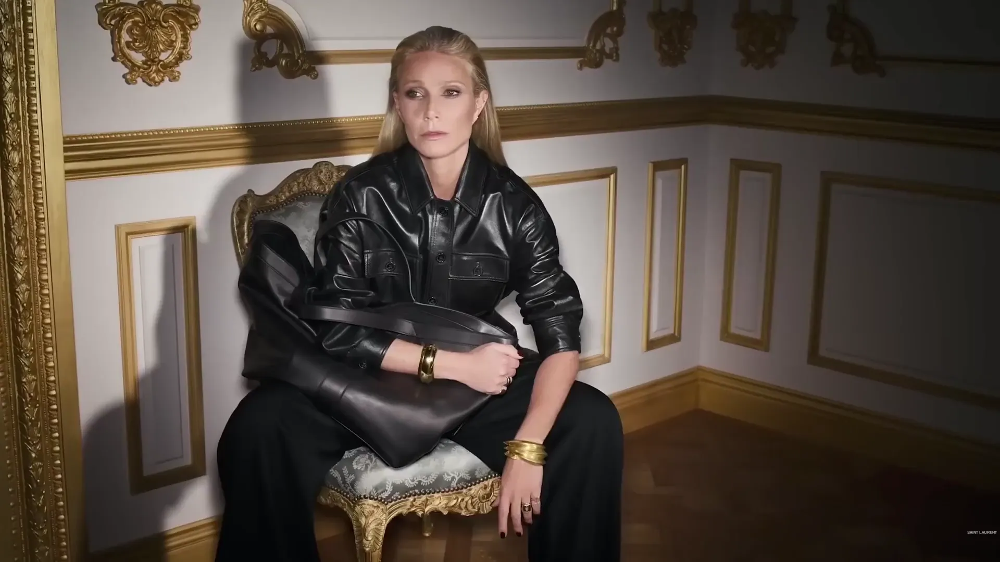


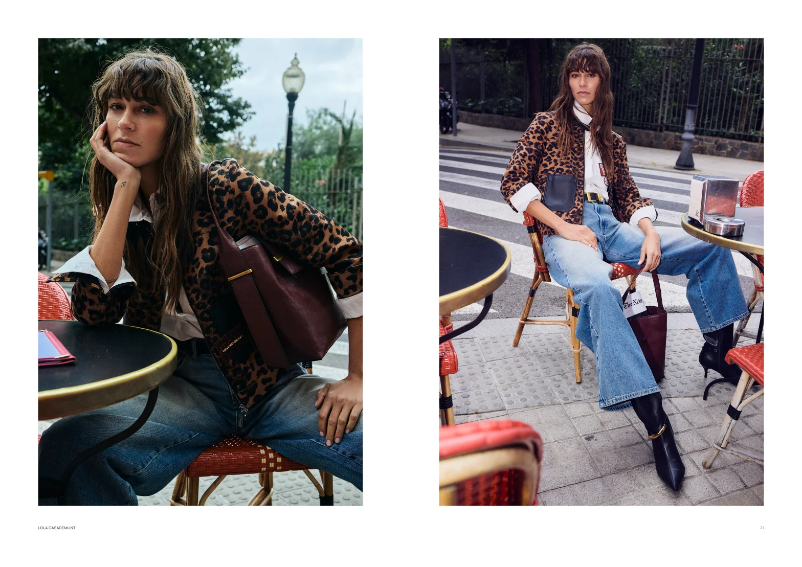
Un gesto. Una pausa.Lo pequeño guarda lo extraordinario.Basta con detenerse.
Lola Casademunt17
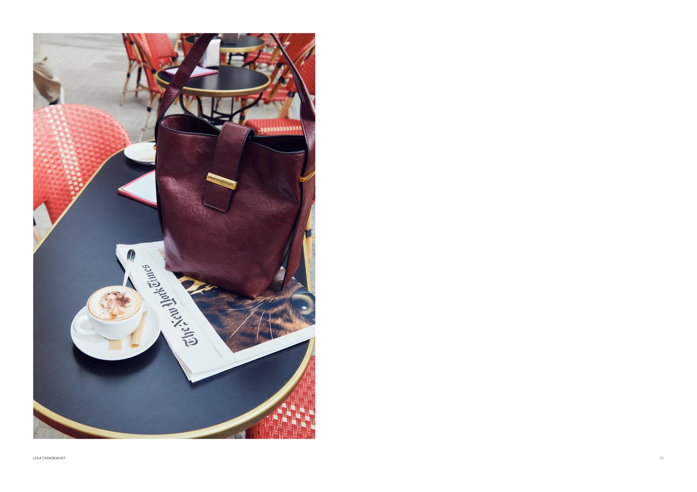

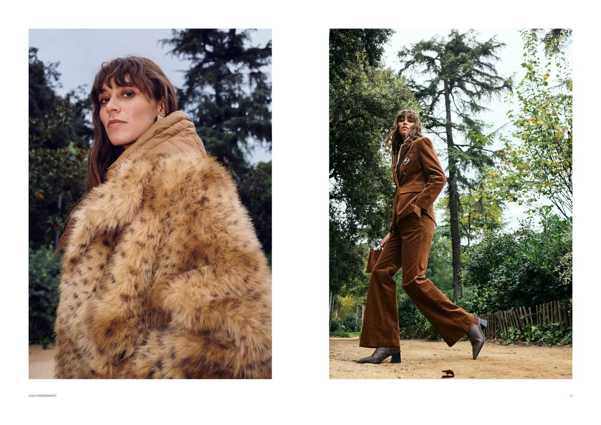
Lo heredado aprende a jugar.Las reglas, para saber romperlas.La imaginación no pide permiso.
Lola Casademunt27

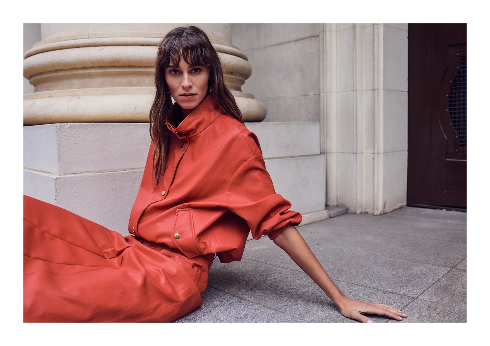
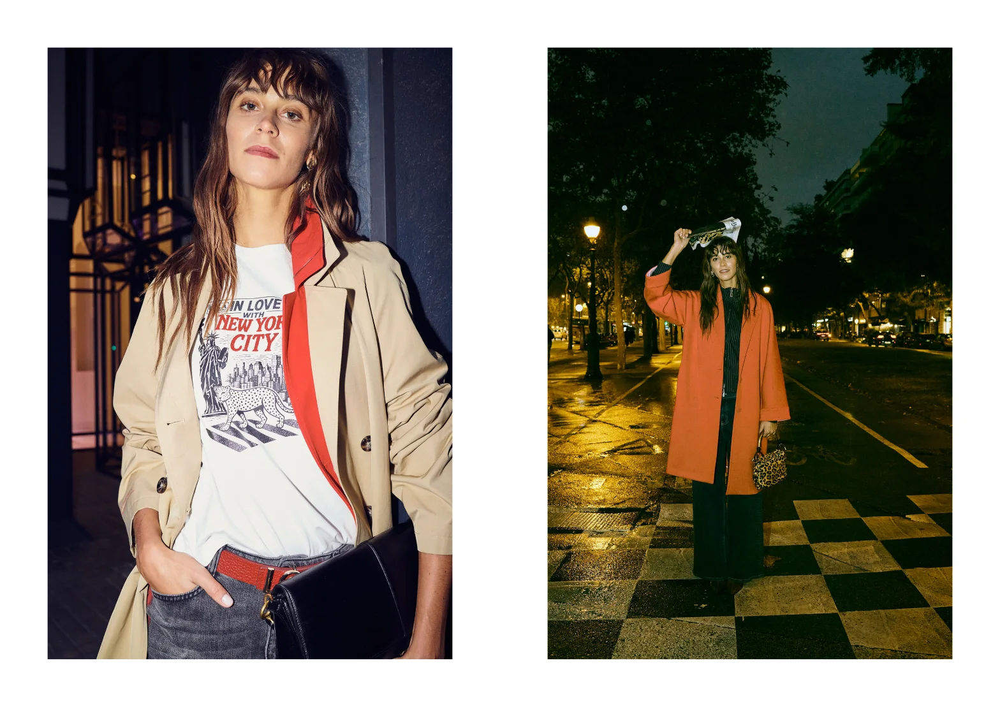
Ser una y ser muchas.Cambiar de ritmo sin perder la voz.Todas, a la vez.
Lola Casademunt37
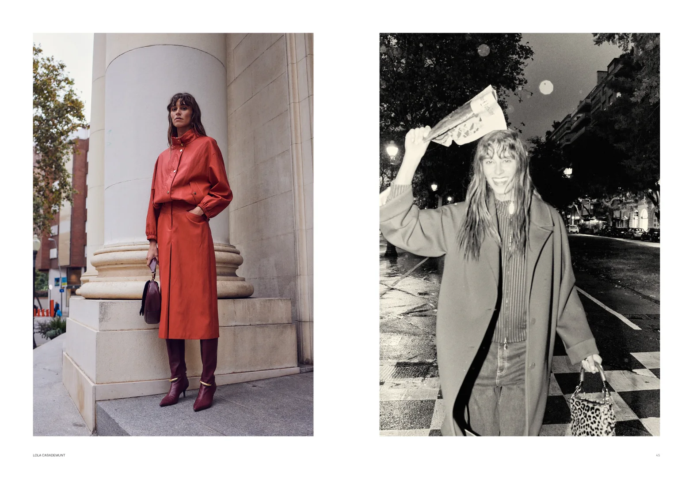
Texto provisional, primer verso.Texto provisional, segundo verso.Texto provisional, tercer verso.Accesorios
Lola Casademunt — Accesorios—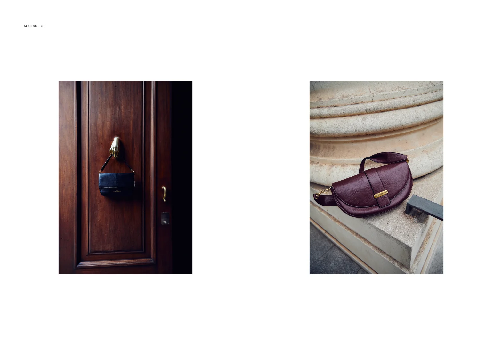
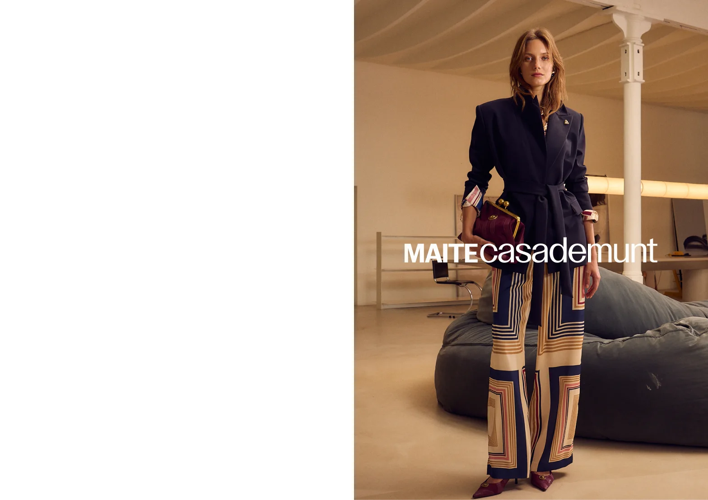
Una casa sin paredes.Cada habitación, un sueño distinto.Aquí no se viaja: se imagina.Vestirse es soñar despierta.Maison des Rêves
Maison des Rêves53

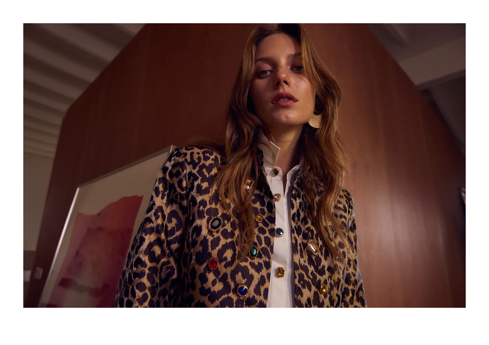
Afuera, el mundo se detiene.Dentro, el tiempo es nuestro.Cerrar los ojos y quedarse.
Maite Casademunt55


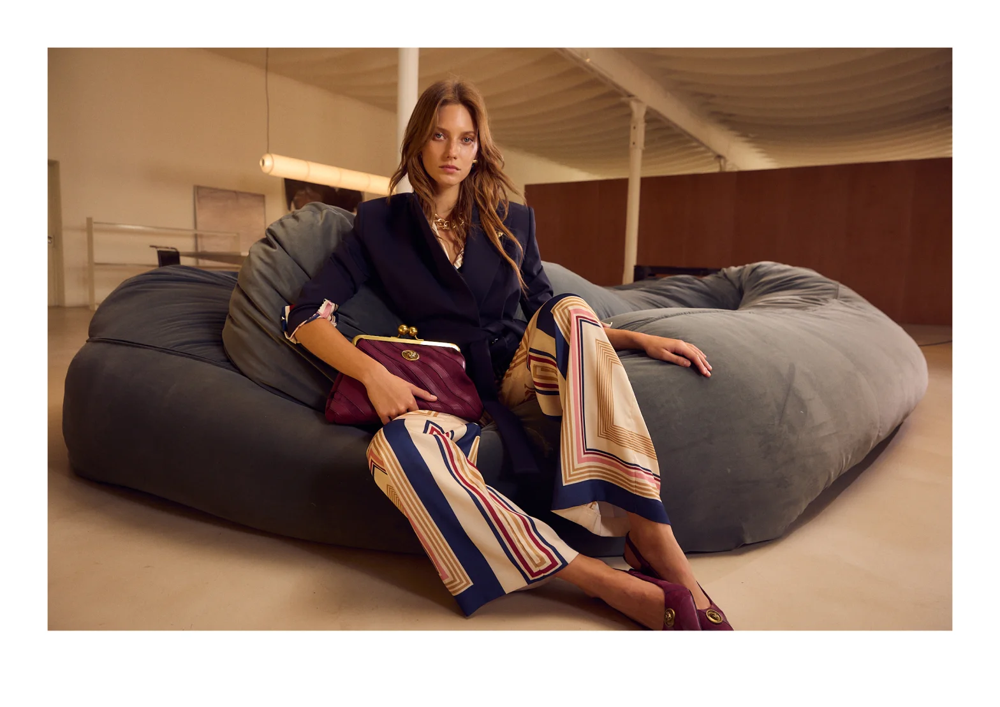
Abrir las ventanas al sueño.Dejar que la noche dure un poco más.Despertar sin dejar de soñar.
Maite Casademunt67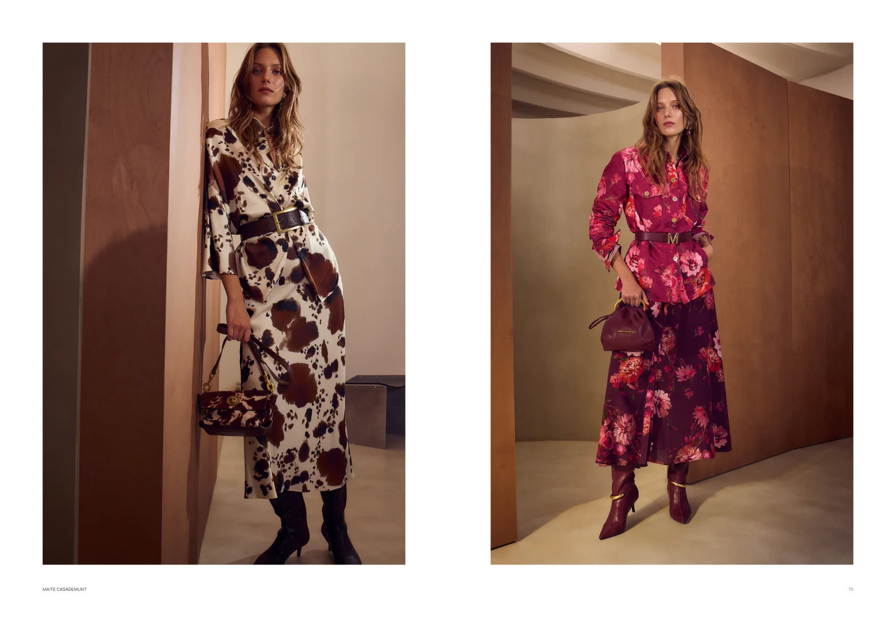

Texto provisional, primer verso.Texto provisional, segundo verso.Texto provisional, tercer verso.Accesorios
Maite Casademunt — Accesorios—
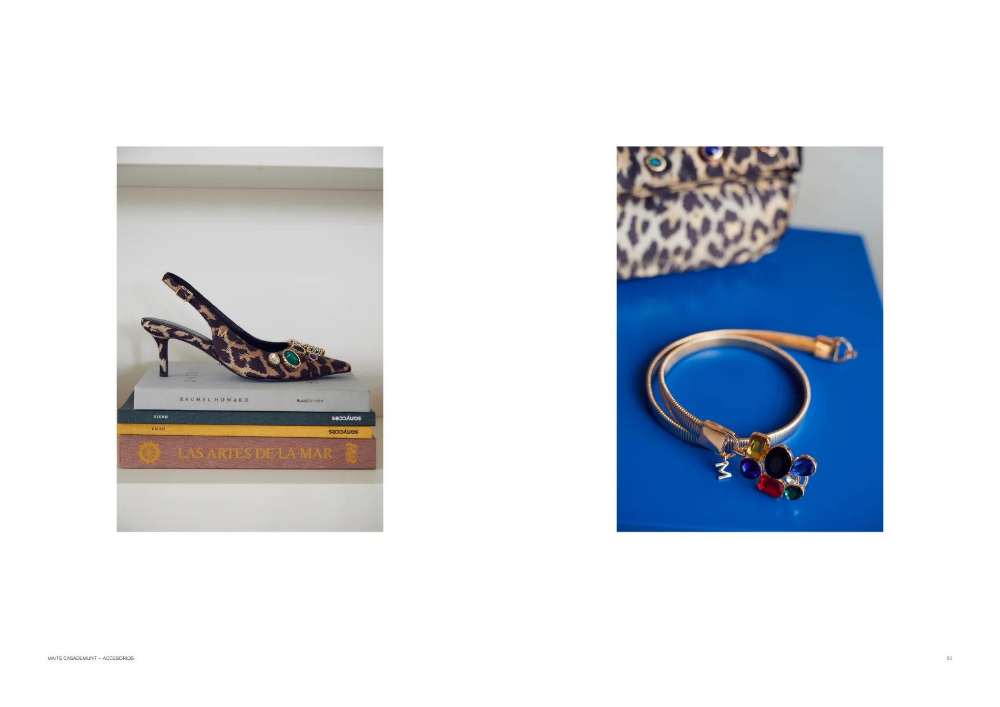